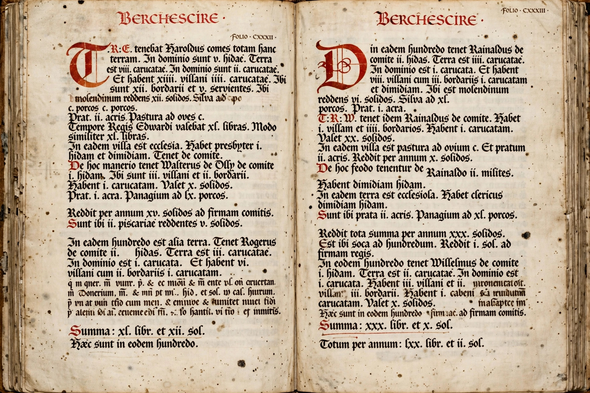

Domesday Book is a manuscript record of the "Great Survey" of much of England and parts of Wales completed in 1086 at the order of William the Conqueror. The survey recorded landholders and their holdings — some 13,418 places — together with livestock, mills, ploughs and the value of estates both "in the time of King Edward" and in 1086. Its name, given by the English in the twelfth century, likened its finality to the Day of Judgment (Doomsday): from its verdict there was no appeal.
| Domesday Book | |
|---|---|
 A page of Great Domesday | |
| Compiled | 1086 |
| Commissioned by | William the Conqueror |
| Volumes | Great Domesday; Little Domesday |
| Language | Medieval Latin (abbreviated) |
| Held at | The National Archives, Kew |
At his Christmas court at Gloucester in 1085, William ordered commissioners to tour England in circuits, questioning local juries under oath in every hundred: who held each manor, how many hides it comprised, how many ploughs, villagers, mills and meadows it had, and what it was worth. The returns were condensed at Winchester into Great Domesday (covering most counties); Little Domesday preserves the fuller, unabbreviated returns for Norfolk, Suffolk and Essex.
The survey served fiscal and tenurial purposes: it settled who held land after the Norman Conquest, assessed the geld tax, and documented the wholesale transfer of land from English thegns to Norman barons — by 1086 only a small fraction of land remained in English hands. For historians Domesday is an unmatched source for the economy, settlement and society of eleventh-century England, recording over 5,000 mills and some 270,000 heads of household (implying a population of roughly 1.5–2 million). The two volumes are now held by The National Archives and have been fully digitised (Open Domesday / Domesday Book Online).
William the Conqueror · Norman Conquest · Harold Godwinson · Danelaw